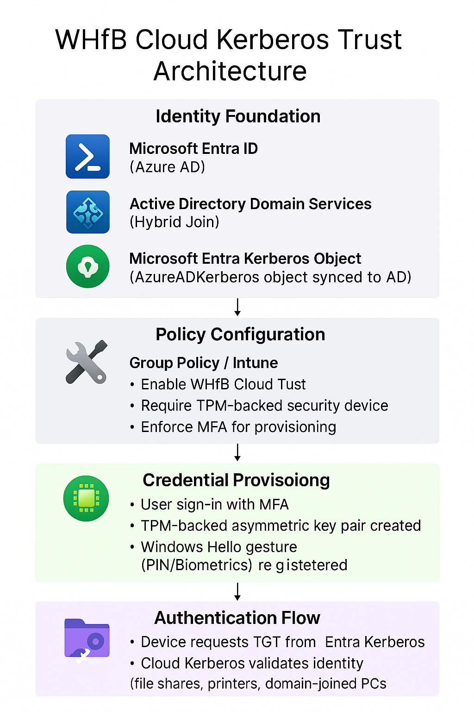

Challenge
Our organization needed to modernize authentication by eliminating passwords and enabling secure biometric and PIN-based sign-in. The goal was to deploy Windows Hello for Business using Cloud Kerberos Trust across hybrid-joined devices without disrupting access to on-premises resources.
Tools & Technologies
- Microsoft Entra Kerberos
- Windows Hello for Business (Cloud Trust)
- Group Policy & Intune (Policy Configuration)
- Active Directory Domain Services
- TPM-backed asymmetric key provisioning
Implementation
- Deployed Microsoft Entra Kerberos and verified AzureADKerberos object in AD
- Configured Windows Hello for Business policies via GPO and Intune
- Enabled “Use Cloud Trust for On-Prem Auth” and “Require Security Device”
- Validated device join status and TGT issuance using
dsregcmd /status - Provisioned Windows Hello credentials with MFA and TPM-backed key pair
- Tested SSO to on-prem resources using biometric and PIN gestures
Architecture Diagram
Impact
- Enabled passwordless sign-in across hybrid-joined devices
- Improved security posture with TPM-backed credentials and MFA
- Maintained seamless access to on-prem resources via Cloud Kerberos Trust
- Reduced helpdesk tickets related to password resets and lockouts
Reference
Deployment steps based on Microsoft’s official guide: Windows Hello for Business Cloud Kerberos Trust